Screenshots
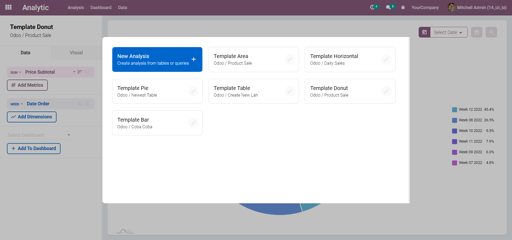
We don't just create dashboard right away without analyzing the data, do we?
In IZI Analytic Platform, we start by clicking the Analysis menu and
create an analysis from queries or available templates.
We provide some analysis templates for
you to explore. You can just click the analysis and boom! the
chart will appear and your exploration begin!
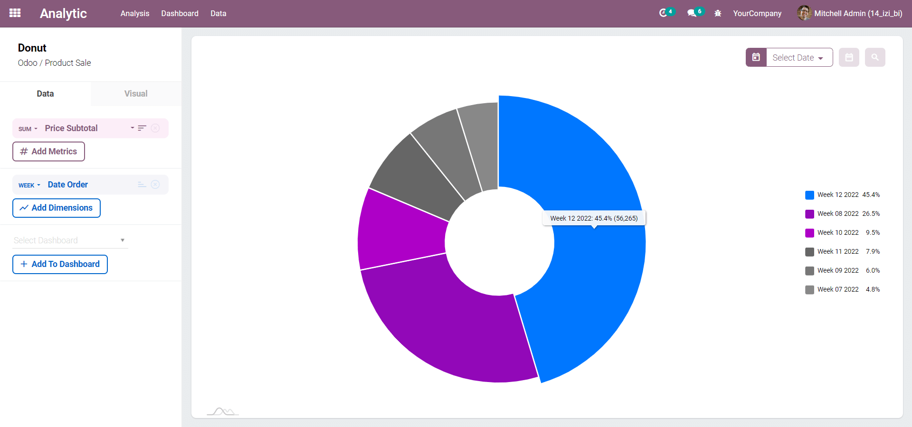
Analysis is an object that represent our exploration of specific data from queries.
We can then select metrics, dimensions and filters to explore our data furthermore.
Metrics are the quantitative measurements of data and dimensions are the labels used to describe them.
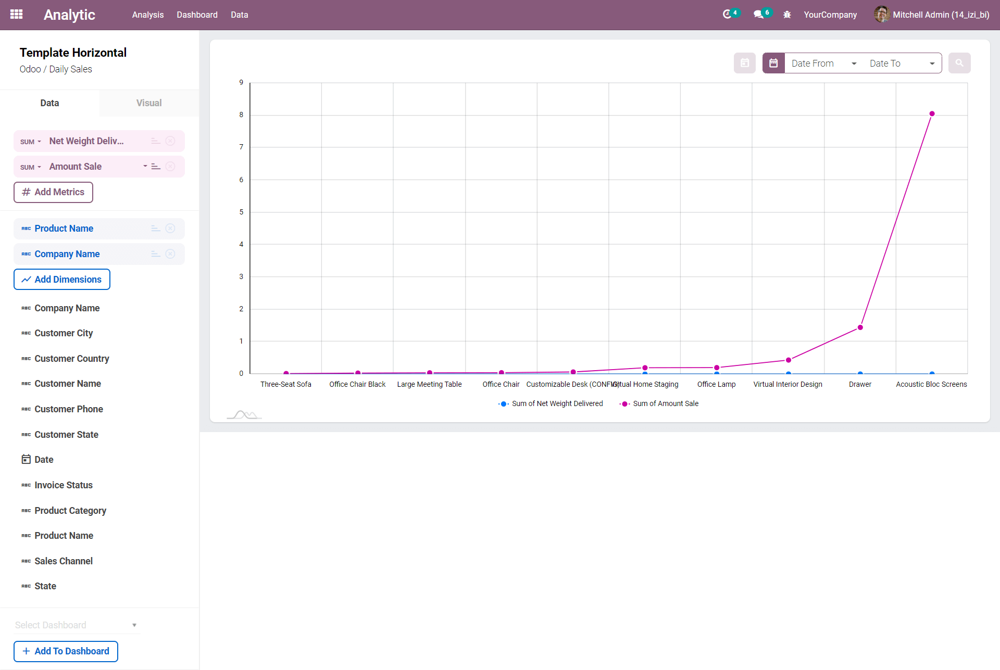
All the fields from the analysis table will appear on the left panel.
We can easily setup our metrics and dimensions by clicking on them.
We can also set the order (ascending or descending), the calculation applied for the metrics,
and the format for each dimensions.
All in one beautiful UI.
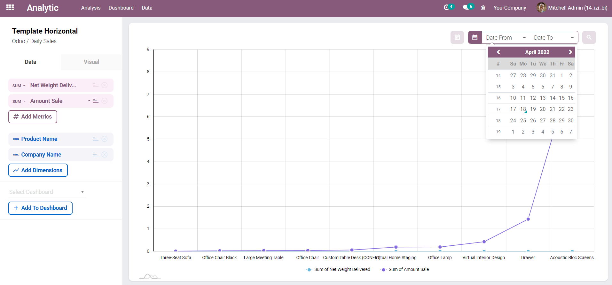
We can add a dynamic filter by selecting the field and the values on the top right of the chart.
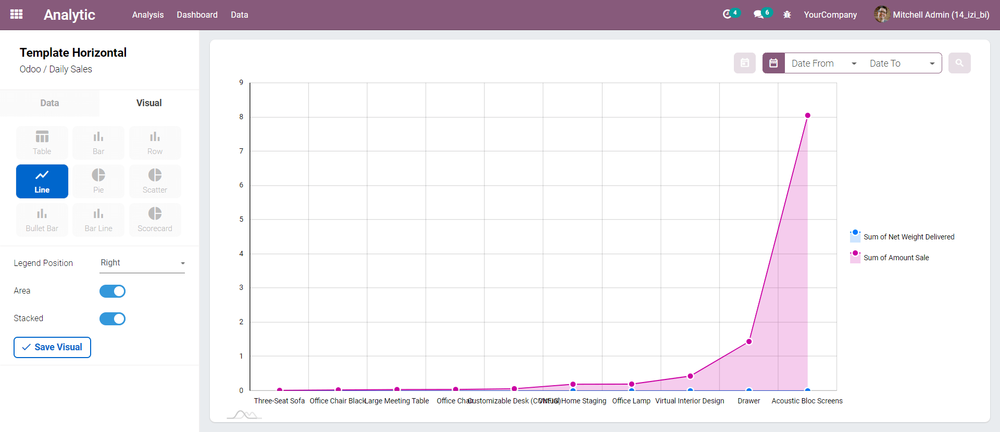
We can cange the visual setting of an analysis by clicking the Visual tab.
There are several visual types available and will be added many more later.
We can also configure detail visual settings like the radius of a pie chart, the position of the legends, etc.
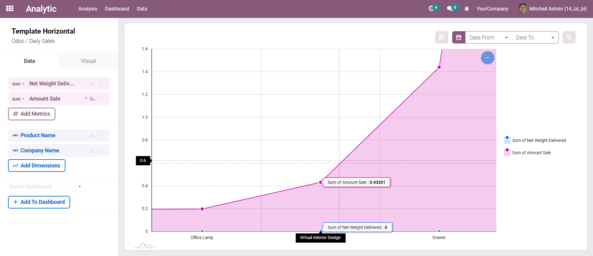
We can zoom the bar and line chart to see specific data in details.
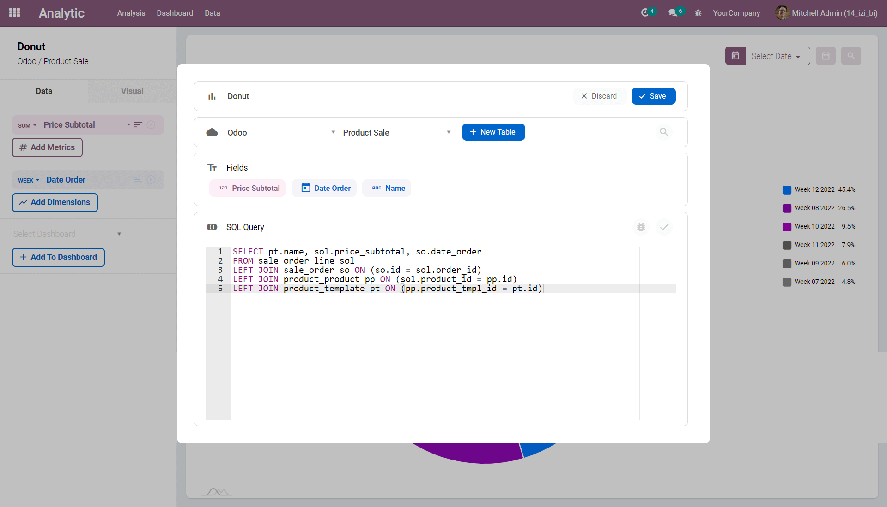
If we want to modify the data query, we can edit the analysis and input the new query there.
We can click on the debug icon button to test the query and process the query to rebuild our analysis table and fields.
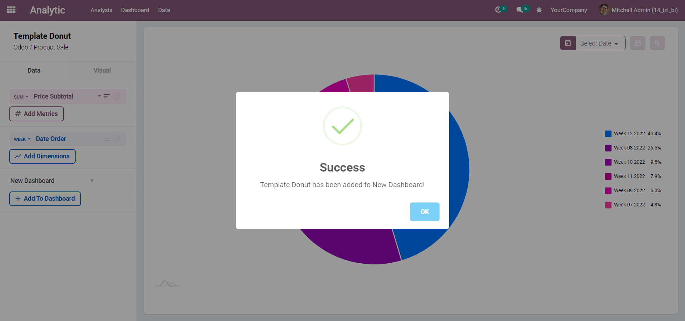
After we finish exploring the data and choosing the right visual configuration, we can finally add our analysis to the dashboard.
Select the dashboard and click Add to Dashboard.
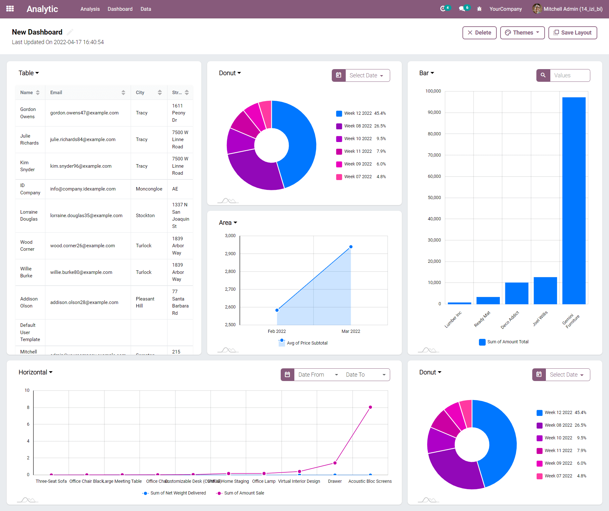
We can go to the Dashboard menu and select an existing dashboard or create a new one.
Afterthat, the system will render all our analysis that has been added to the dashboard.
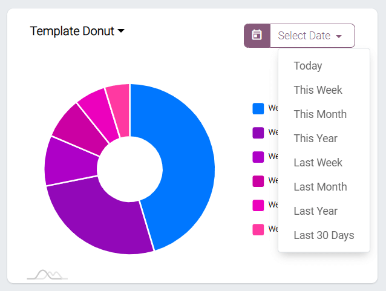
We can still play with our filter here in the dashboard view.
We can also remove an analysis from the dashboard.
Or go back to our analysis view to edit the analysis.
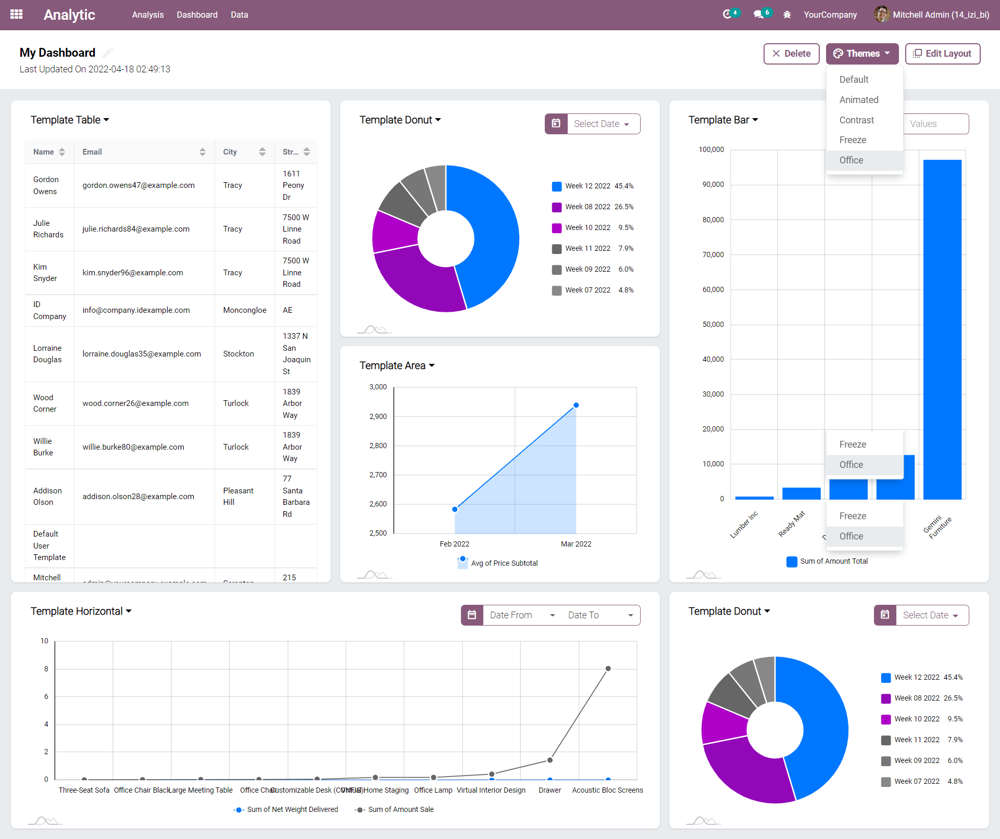
We can change the layout and select a theme to customize the dashboard.
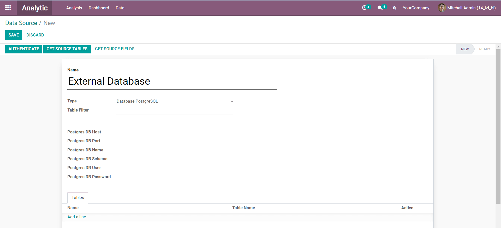
IZI Analytic Platform is able to extract data from various data sources, not only Odoo.
Currently, we have data source connectors to External PostgreSQL and MySQL Databases.
We will add more connectors to access other type of databases, data files and external application APIs.